Your next adventure starts here!
Lochquarry is a premier outdoor adventure destination located in the
heart of Scotland. We offer a wide range of activities for all ages
and skill levels, from rock climbing and kayaking to zip-lining and
hiking. Our experienced guides ensure a safe and exhilarating
experience for everyone.
Our activities are very popular with youth groups including Scouts
and Guides, and we currently have special offers just for schools!
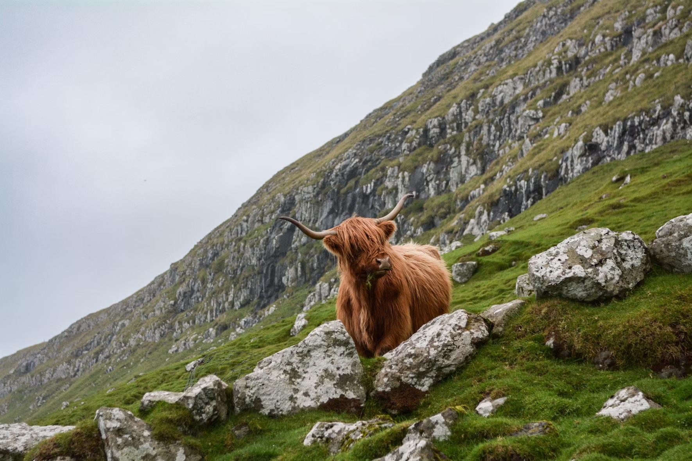
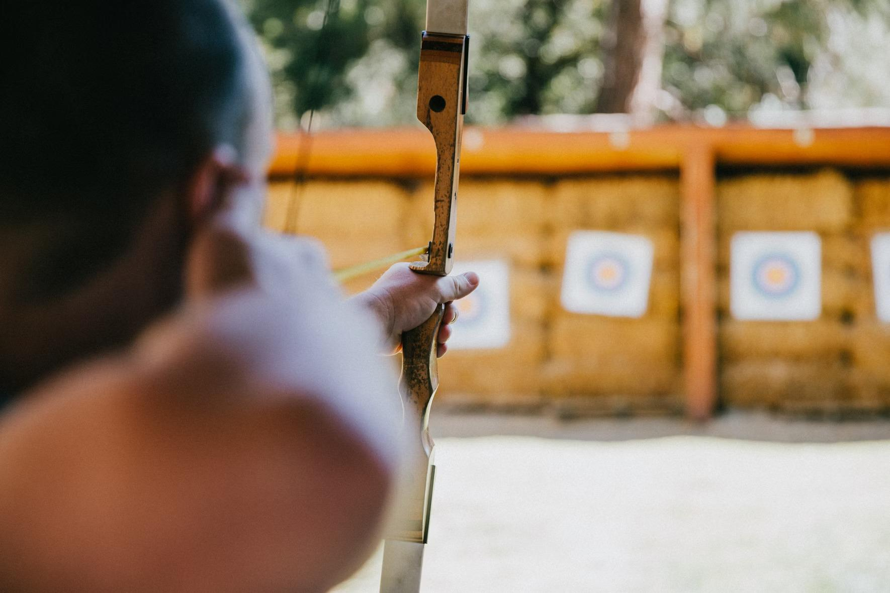
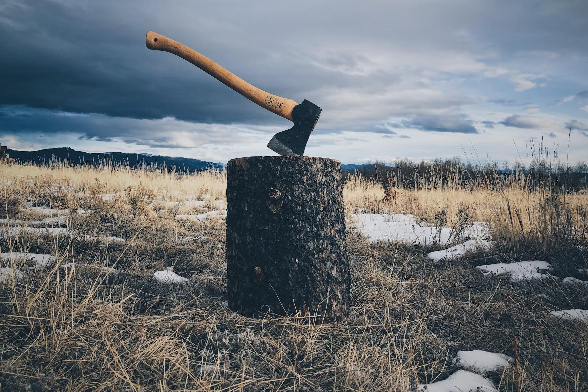
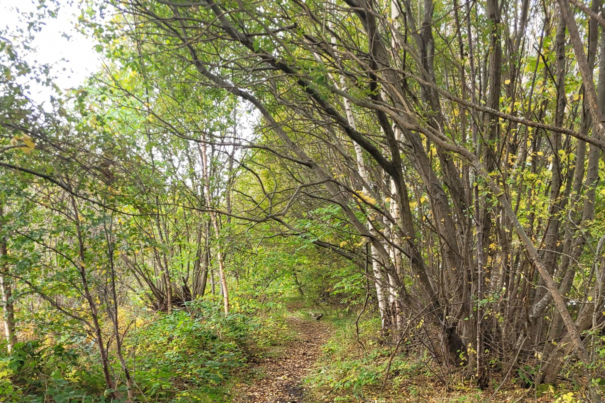
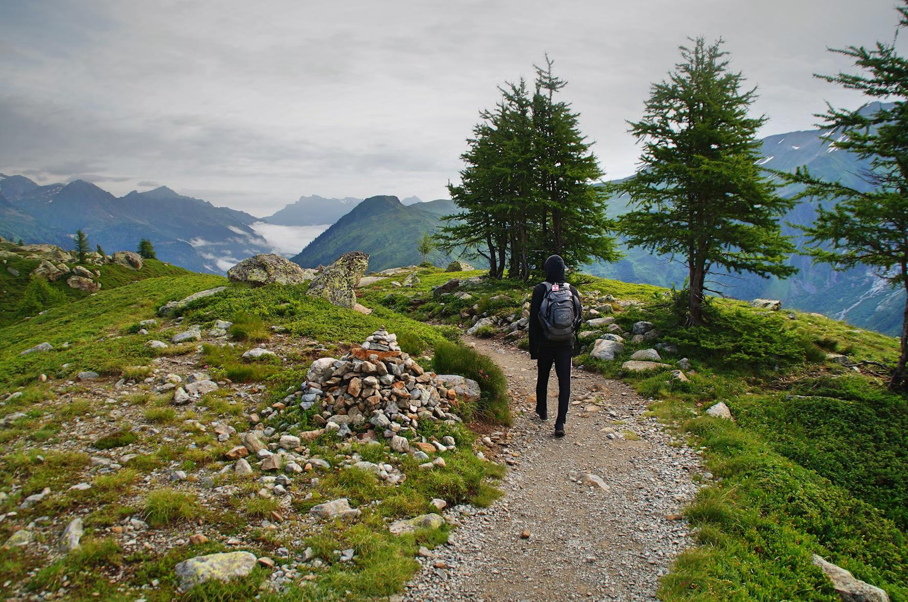
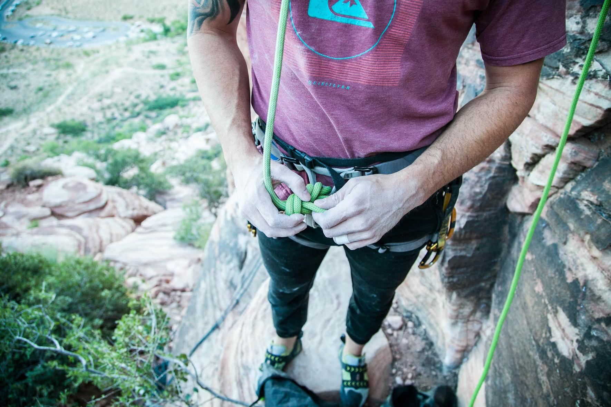
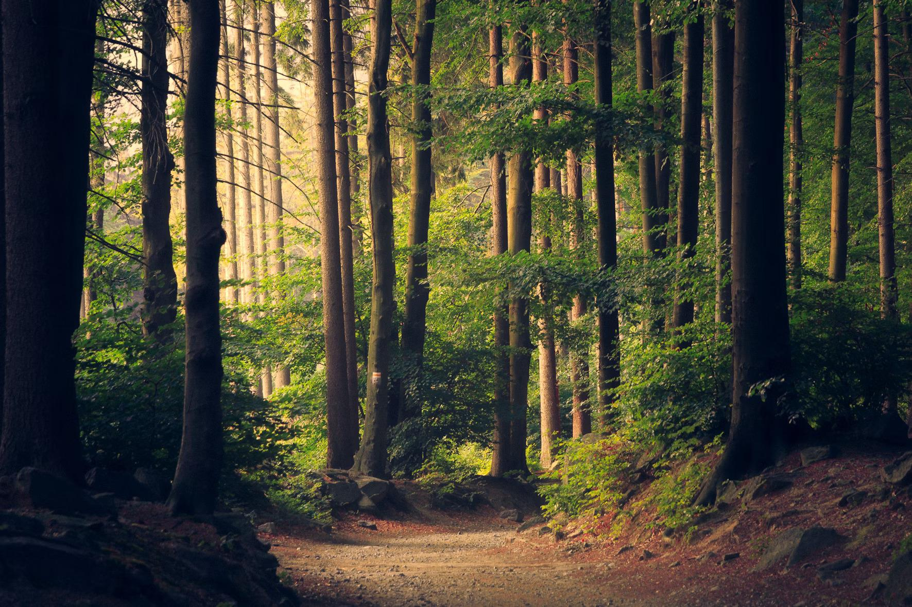
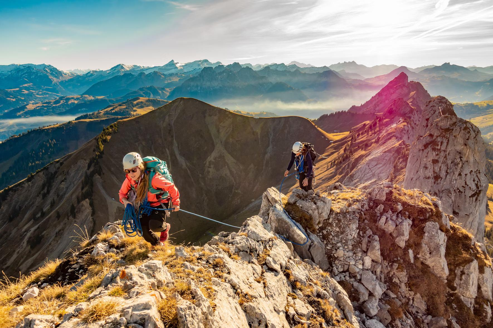
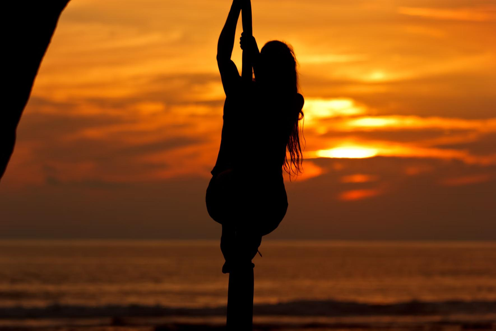
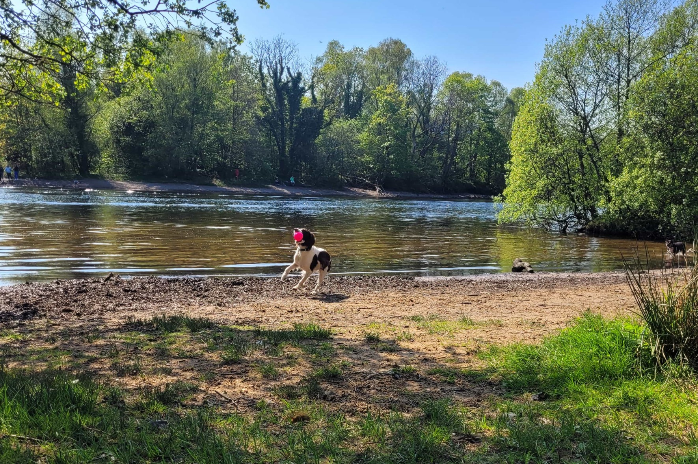
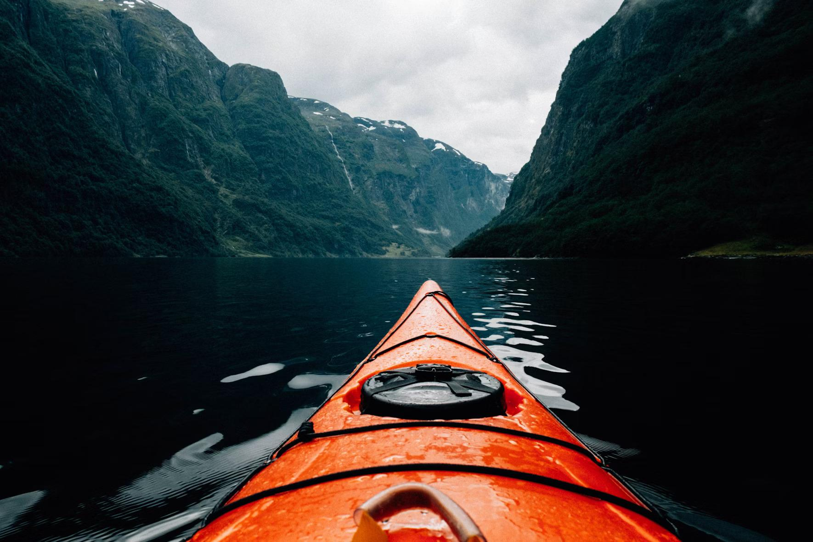
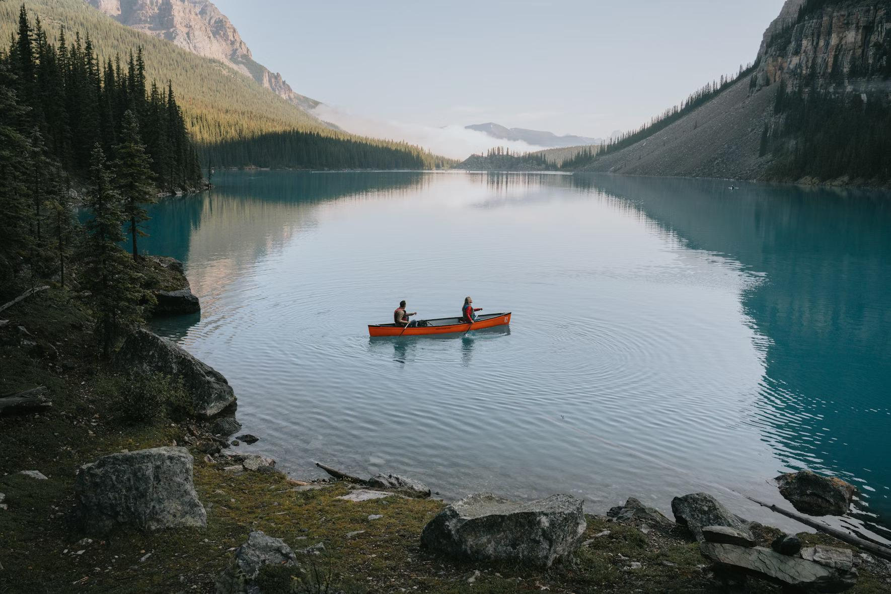
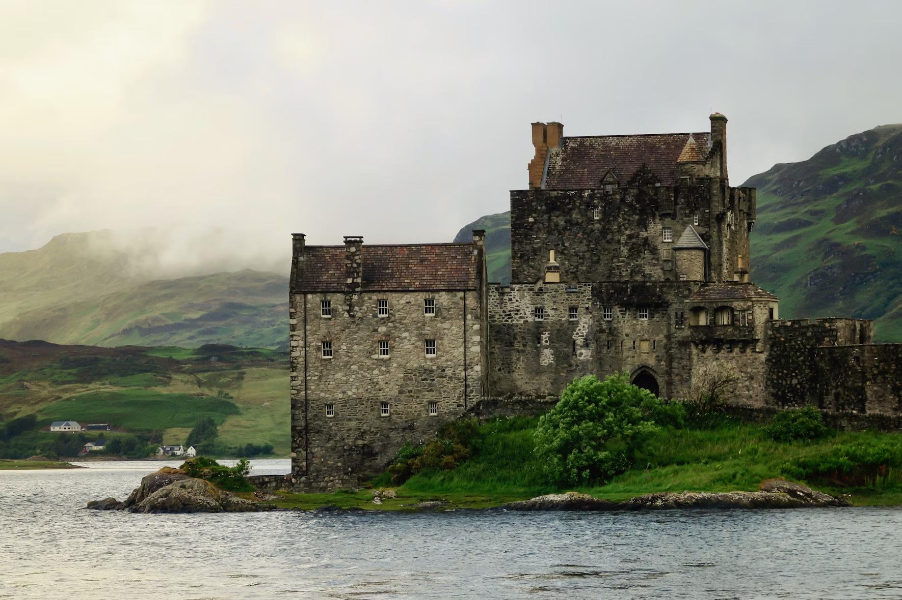
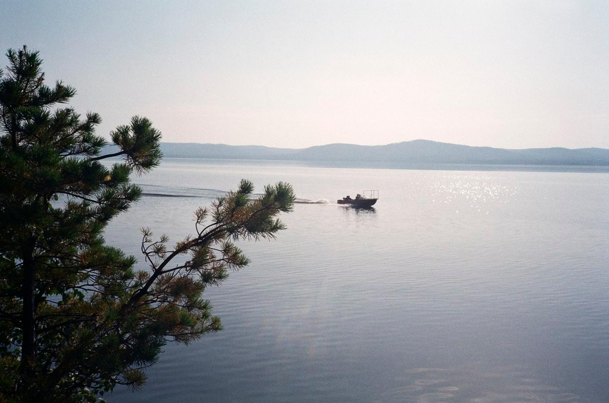